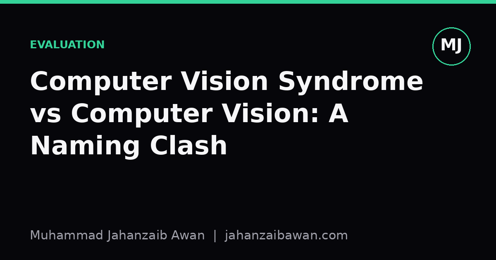

Computer Vision Syndrome vs Computer Vision: A Naming Clash
Two unrelated fields share a name and a search bar, and that collision has practical consequences for researchers, clinicians, and anyone trying to read the literature carefully.

Why this matters more than it seems
I first noticed the problem while doing a literature search for an image classification project. I typed 'computer vision symptoms' into a database, expecting papers about failure modes in neural networks, and instead got a wall of ophthalmology studies about eye strain, dry eyes, and blurred vision from screen use. At first I assumed I had mistyped something. I had not. Computer vision syndrome is a real, well documented condition in occupational health, and it has nothing to do with the field I was trying to read about.
This is not a trivial mix-up. Shared terminology across unrelated disciplines creates friction at every stage of research: search engines return irrelevant results, citation managers tag papers with the wrong subject headings, and casual readers skimming a headline can walk away with a completely wrong impression of what a study claims. When I describe my own work to someone outside the field, I have learned to say 'computer vision, as in image recognition' almost reflexively, because the ambiguity is immediate and the default assumption in a general audience is often the medical one, not the technical one.
Naming collisions like this are common across science, but this particular one is worth unpacking because both sides of the collision are large, active, and growing. Eye strain from screens is becoming more relevant as people spend more hours on devices, and the AI field called computer vision is expanding into nearly every industry. The two are on a collision course not because they are related, but because they are both increasingly visible, which makes the shared name increasingly costly.
What each term actually refers to
Computer vision syndrome, sometimes called digital eye strain, is a cluster of symptoms associated with prolonged screen use: eye fatigue, dryness, headaches, blurred vision, and neck or shoulder discomfort from poor posture while viewing a screen. It is studied in optometry, occupational health, and ergonomics. The mechanisms involve reduced blink rate during screen focus, glare, poor viewing distance, and uncorrected vision problems that become more noticeable under sustained near-focus tasks. Interventions tend to be practical: screen breaks, adjusted lighting, proper seating distance, and in some cases corrective lenses tuned for intermediate distance rather than standard reading distance.
Computer vision the field is a branch of artificial intelligence concerned with enabling machines to extract information from images and video: detecting objects, segmenting scenes, recognising faces, estimating depth, tracking motion. It draws on signal processing, geometry, statistics, and more recently deep learning architectures trained on large labelled datasets. A typical paper in this field might report detection accuracy on a benchmark, discuss how a model generalises to unseen lighting conditions, or propose a new way to handle occlusion in video frames. None of this involves a camera pointed at a human eye for health reasons; the 'vision' here is the machine's interpretive capability, borrowed as a metaphor from biological sight.
The metaphor is exactly where the confusion originates. Both terms use 'vision' to mean the act of seeing and interpreting, one biological and one computational, and both happen to involve the word 'computer' because screens and machines are the shared context. It is a coincidence of etymology rather than any deeper connection, but coincidences in naming are sticky once they are embedded in decades of publication and common usage.
A worked example of the practical cost
Suppose a university library runs a search for 'computer vision' across its full-text index to assemble a reading list for a new AI module. If the search is not scoped carefully with field-specific filters, such as restricting results to computer science or engineering subject categories, a meaningful fraction of the top results by raw keyword match could be ophthalmology or public health papers about screen-related eye symptoms. In a search returning the first fifty hits by relevance, it is entirely plausible that a dozen or more are medical rather than technical, depending on how the index weights full-text occurrences versus title matches. The student assembling the reading list wastes time filtering by hand, and worse, might miss a genuinely relevant technical paper buried below a cluster of unrelated medical results.
The same problem shows up in citation alerts. A researcher who sets up an automated alert for the keyword phrase 'computer vision' without additional qualifiers will periodically receive notifications about new ergonomics or optometry research. Over a year, this adds a steady trickle of noise to an inbox meant for tracking developments in object detection or image segmentation. It is a small cost per instance but compounds across a career of literature monitoring, and it is entirely avoidable with better query construction, such as pairing the phrase with terms like 'neural network', 'deep learning', or 'image dataset' to disambiguate intent.
There is also a softer, more social cost. When writing for a general audience or presenting to non-specialists, failing to disambiguate early can derail an entire talk. I have seen a short presentation lose its opening minute to an audience member asking, in good faith, whether the talk was about preventing eye strain in office workers. The confusion is reasonable given the shared name, but it costs the presenter momentum and forces an unplanned detour to clarify scope before the actual content can begin.
A practical takeaway
The fix is simple and worth adopting as a habit rather than treating as a one-off correction. When writing, searching, or speaking, qualify the term on first use: say 'computer vision syndrome' in full when referring to the eye strain condition, and say 'computer vision' alongside a clarifying phrase such as 'the AI field' or 'image recognition' when referring to the technical discipline. In searches, add disambiguating keywords rather than relying on a bare phrase match, and where possible, use subject-specific databases or filters rather than general full-text search engines.
None of this requires renaming either field, which would be impractical given decades of established usage on both sides. It only requires a small, consistent discipline in how the term is used in context. Precision in terminology is a cheap habit that pays for itself every time someone else has to read, search, or act on what you wrote, and a naming collision this easy to clarify is not worth leaving to chance.